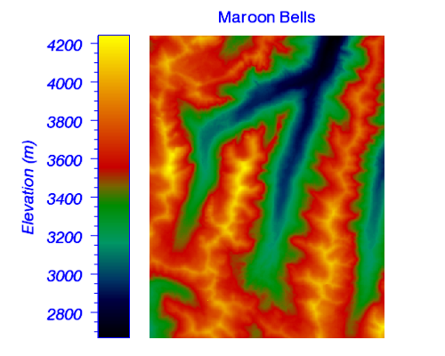
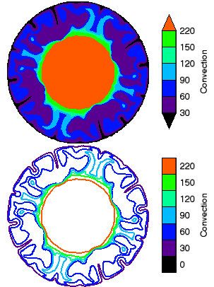
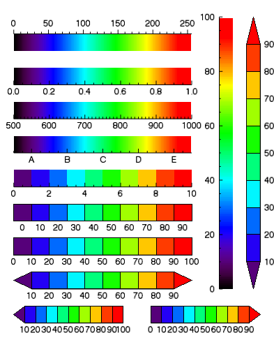

With the COLORBAR function, you can add a colorbar annotation to an existing IDL Graphic, or create a colorbar from scratch.

The following lines create the graphic shown at the top of this topic.
; Import and display Maroon Bells data.
file = FILEPATH('surface.dat', $
SUBDIR=['examples','data'])
data = READ_BINARY(file, DATA_DIMS=[350,450], $
DATA_TYPE=2, ENDIAN='little')
im = IMAGE(data, RGB_TABLE=4, $
POSITION=[0.25,0.05,0.95,0.9], $
FONT_COLOR='Blue', FONT_SIZE=16, $
TITLE='Maroon Bells')
; Add a colorbar
c = COLORBAR(TARGET=im, ORIENTATION=1, $
POSITION=[0.22,0.05,0.29,0.9], $
TITLE='Elevation (m)')
; Change some properties
c.TEXTPOS = 0
c.TICKDIR = 1
c.BORDER_ON = 1
c.COLOR = 'Blue'
c.FONT_STYLE = 'Italic'
c.FONT_SIZE = 16
graphic = COLORBAR([, / DATA ] [, / DEVICE ] [, / NORMAL ] [, TARGET = variable ] [, Properties = variable ])
Properties can be set as keywords to the function during creation, or retrieved or changed using the "." notation after creation.
Note: Unlike other keywords in IDL, you cannot use an abbreviated form of the property name when setting them during creation. Instead, you must use the full property name.
ANTIALIAS , BORDER , CLIP , COLOR , FONT_NAME , FONT_SIZE , FONT_STYLE , HIDE , MAJOR , MINOR , NAME , ORIENTATION , POSITION , RANGE , RGB_TABLE , SUBTICKLEN , TAPER , TEXT_COLOR , TEXT_ORIENTATION , TEXTPOS , THICK , TICKDIR , TICKFORMAT , TICKINTERVAL , TICKLAYOUT , TICKLEN , TICKNAME , TICKVALUES , TITLE , TRANSPARENCY , UVALUE , WINDOW
The COLORBAR function returns a reference to the created graphic. Use the returned reference to manipulate the graphic after creation by changing properties or calling methods.
None.
Keywords are applied only during the initial creation of the graphic.
Set this keyword if the POSITION units are in data coordinates.
Set this keyword if the POSITION units are in device coordinates.
Set this keyword if the POSITION units are in normal coordinates (the default).
Set this keyword to the visualization to which the colorbar should be associated. If TARGET is not specified, and the RGB_TABLE property is not set, then any currently selected objects will be used. If the target does not have a color palette, then no colorbar will be created.
By default anti-aliasing is used when drawing lines. Set this property to 0 to disable anti-aliasing.
Set this property to display a border around the image portion of the colorbar.
Set this property to 1 to clip portions of the graphic that lie outside of the dataspace range, or to 0 to disable clipping. The default is 1. This property is ignored unless the DATA property is set.
Set this property to a string or RGB vector giving the color of the border and tickmarks of the colorbar. The default is "black".
Set this property equal to a string specifying the IDL or system font for the text. The default value is “Helvetica”.
Set this property equal to an integer specifying the font size for the text. The default value is 16 points.
Set this property equal to an integer or a string specifying the font style for the text. Allowed values are:
|
Integer |
String |
Resulting Style |
|
0 |
"Normal" or "rm" |
Default (roman) |
|
1 |
"Bold" or "bf" |
Bold |
|
2 |
"Italic" or "it" |
Italic |
|
3 |
"Bold italic" or "bi" |
Bold italic |
Set this property to 1 to hide the graphic. Set HIDE to 0 to show the graphic.
Set this property to an integer representing the number of major tick marks. The default value is -1, specifying that IDL will compute the number of tickmarks. Setting MAJOR equal to 0 suppresses major tickmarks entirely.
Set this property to an integer representing the number of minor tick marks. The default value is -1, specifying that IDL will compute the number of tickmarks. Setting MINOR equal to 0 suppresses minor tickmarks entirely.
Set this property to a string that specifies the name of the graphic. The name can be used to retrieve the graphic using the brackets array notation. If NAME is not set then a default name is chosen based on the graphic type.
Set this property to specify whether the colorbar is displayed horizontally (ORIENTATION=0, the default), or vertically (ORIENTATION=1). Note: Changing the orientation of a colorbar will reset any scaling or rotation that has occurred.
Set this property to set the location of the colorbar. POSITION is specified as a four-element vector: [X1, Y1, X2, Y2], defining the lower left and upper right corners of the image portion of the colorbar. By default the colorbar is centered either underneath (ORIENTATION=0) or on the right side (ORIENTATION=1) of the image.
Set this property to a two-element vector giving the data range of the colorbar. This property is only used when you are creating a custom colorbar, and is ignored if you specify a TARGET.
Set this property to one of the following values:
This property is only used when you are creating a custom colorbar, and is ignored if you specify a TARGET. See below for the difference between continuous and discrete colorbars.
Set this property to a floating point scale ratio specifying the length of minor tick marks relative to the length of major tick marks. The default value is 0.5, specifying that the minor tick mark is one-half the length of the major tick mark.
For a discrete colorbar, set this property to create tapered ends on the colorbar. Possible values are:
3 - Taper the right (maximum) end of the colorbar, and eliminate the label on that end. The taper indicates that the color at the right end of the colorbar applies to all data values above the last labelled tick.
This property is ignored for colorbars which have a continuous RGB table.
Note: By default, for a colorbar associated with a line contour plot, the colorbar has no tapered ends (TAPER=0). For a colorbar associated with a filled contour plot, the colorbar may have tapered ends. If the lowest contour level is equal to or lower than the lowest contour data value, then the left end will be tapered (TAPER=2). If the highest contour level is equal to or greater than the highest contour data value, then the right end will be tapered (TAPER=3). If both conditions are true then both ends will be tapered (TAPER=1). If neither condition is true then the ends will not be tapered (TAPER=0). See the example below.
Set this property to a string or RGB vector containing the axis text color. The default value is the same color as the COLOR property.
Set this property to the angle (in degrees) of the tick mark labels. The default is 0.
Set this property to 1 to position the tick labels and axis title above the axis. The default is 0, below the axis.
Tip: The TICKDIR property may be used to control the direction of axis tick marks.
Set this property to a value between 0 and 10 that specifies the line thickness. A thickness of 0 displays a thin hairline on the chosen device. The default value is 1.
Set this property to 1 to draw the tickmarks facing outwards. The default is 0, facing inwards.
Tip: The TEXTPOS property may be used to control the position of tick mark data values and axis titles.
Set this property to a string, or an array of strings, in which each string represents a format string or the name of a function to be used to format the tick mark labels. If an array is provided, each string corresponds to a level of the axis. See AXIS for a detailed description of this property.
Set this property to a floating-point number indicating the interval between major tick marks. The default value is computed according to the axis range and the number of major tick marks (MAJOR). If this property is set then the MAJOR property is ignored.
Set this property to an integer that indicates the tick layout style. Set this property to 0 (the default) to draw the axis line, tick marks, and tick labels. Set to 1 to only draw the labels. Set to 2 to draw a box around the tick labels.
Set this property to set the length of the tickmarks. The default is 0.25.
Set this property to a string array of up to 30 elements that controls the annotation of each tick mark. If you want to create a "discrete" colorbar, you should set TICKNAME equal to (or one more than) the number of colors in the RGB_TABLE. See below for the difference between continuous and discrete colorbars.
Set this property to an array of tick mark locations. If TICKVALUES is set to 0 (the default value), IDL computes the tick values based on the axis range and the number of major ticks.
Set this property to a string representing the title of the axis. You can also add Greek letters and mathematical symbols using a TeX-like syntax. These symbols need to be enclosed within a pair of "$" characters. See Adding Mathematical Symbols and Greek Letters to the Text String for details on the available symbols.
Set this property to an integer between 0 and 100 that specifies the percent transparency of the colorbar. The default value is 0.
Set this property to an IDL variable of any data type.
This property retrieves a reference to the WINDOW object that contains the graphic.

The COLORBAR function can be used to create either continuous or discrete colorbars. Colorbars created from an IMAGE or VECTOR will be "continuous", using the RGB table associated with the image. Colorbars created from a CONTOUR plot will be "discrete", with each color box (or swatch) corresponding to a different contour level. For example, the following code creates two different contour plots (filled and unfilled), both of which produce discrete colorbars:
file = FILEPATH('convec.dat', $
SUBDIR=['examples', 'data'])
z = READ_BINARY(file,DATA_DIMS=[248,248])
index = [0,30,60,90,120,150,220]
c1 = CONTOUR(z, /FILL, ASPECT_RATIO=1, DIM=[300,500], $
RGB_TABLE=39, RGB_INDICES=index, C_VALUE=index, $
LAYOUT=[1,2,1], AXIS_STYLE=0, MARGIN=0)
; Create a discrete colorbar with vertical orientation.
; The ends are automatically tapered for a filled contour.
cb = COLORBAR(TARGET=c1, TITLE='Convection', /BORDER, $
ORIENTATION=1, TEXTPOS=1, POSITION=[0.8,0.55,0.85,0.95])
c2 = CONTOUR(z, C_THICK=2, ASPECT_RATIO=1, /CURRENT, $
RGB_TABLE=39, RGB_INDICES=index, C_VALUE=index, $
LAYOUT=[1,2,2], AXIS_STYLE=0, MARGIN=0)
; Create a discrete colorbar with vertical orientation.
; Labels are centered on the colors for a line contour.
cb = COLORBAR(TARGET=c2, TITLE='Convection', /BORDER, $
ORIENTATION=1, TEXTPOS=1, POSITION=[0.8,0.05,0.85,0.45])
Colorbars created from scratch (without a TARGET) may be either continous or discrete. By default, the COLORBAR function uses the RGB_TABLE property to create a colorbar with a continuous range of N colors that spans the RANGE. The TICKVALUES and TICKNAME properties are then used to label the colorbar axis. If you wish to create a "discrete" colorbar, you should set the TICKNAME property to a string array with exactly N or N +1 elements, where N is the number of colors specified by the RGB_TABLE property. If TICKNAME has N elements then the labels will be centered underneath each color swatch in the colorbar. If TICKNAME has N +1 elements then the labels will be centered underneath the lines between each color.
The following code creates a variety of colorbars from scratch.

; Create an empty window.
w = WINDOW(DIMENSIONS=[400,600])
; Colorbar with a custom color table, labels on the top.
cb = COLORBAR(POSITION=[0.05,0.85,0.7,0.9], $
RGB_TABLE=39, TEXTPOS=1)
; Colorbar with a custom color table and custom range.
cb = COLORBAR(POSITION=[0.05,0.75,0.7,0.8], $
RGB_TABLE=39, RANGE=[0,1])
; Colorbar with a custom range and default labels.
cb = COLORBAR(POSITION=[0.05,0.65,0.7,0.7], $
RGB_TABLE=39, RANGE=[500,1000])
; Colorbar with a custom range and custom labels.
cb = COLORBAR(POSITION=[0.05,0.55,0.7,0.6], $
RGB_TABLE=39, RANGE=[500,1000], $
TICKVALUES=[550,650,750,850,950], $
TICKNAME=['A','B','C','D','E'])
; Vertical colorbar, range 0-100
cb = COLORBAR(POSITION=[0.8,0.15,0.85,0.95], $
RGB_TABLE=39, RANGE=[0,100], ORIENTATION=1)
; Pull out a subset of the color table
; Note: This is not a "discrete" colorbar because it
; does not have tick labels for each color.
LOADCT, 39, RGB_TABLE = rgb
rgb = rgb[25 + 25*INDGEN(10), *]
cb = COLORBAR(POSITION=[0.05,0.45,0.7,0.5], RGB_TABLE=rgb)
; Discrete colorbar with the number of labels matching the
; number of colors. This centers the labels under the colors.
; Similar to what is used for a contour line plot.
tickname = STRING(10*INDGEN(10), FORMAT='(I0)')
cb = COLORBAR(POSITION=[0.05,0.35,0.7,0.4], RGB_TABLE=rgb, $
TICKNAME=tickname, BORDER=1)
; Discrete colorbar with one extra label compared to the
; number of colors. The labels are now under the lines.
; Similar to what is used for a filled contour plot.
tickname = STRING(10*INDGEN(11), FORMAT='(I0)')
cb = COLORBAR(POSITION=[0.05,0.25,0.7,0.3], RGB_TABLE=rgb, $
TICKNAME=tickname, BORDER=1)
; Discrete colorbar with tapered ends.
; Similar to what is used for a filled contour plot.
cb = COLORBAR(POSITION=[0.05,0.15,0.7,0.2], RGB_TABLE=rgb, $
TICKNAME=tickname, BORDER=1, TAPER=1)
; Discrete colorbar with a taper at the left (minimum) end.
cb = COLORBAR(POSITION=[0.05,0.05,0.45,0.1], RGB_TABLE=rgb, $
TICKNAME=tickname, BORDER=1, TAPER=2)
; Discrete colorbar with a taper at the right (maximum) end.
cb = COLORBAR(POSITION=[0.55,0.05,0.95,0.1], RGB_TABLE=rgb, $
TICKNAME=tickname, BORDER=1, TAPER=3)
; Discrete colorbar with vertical orientation,
; labels on the right-hand side.
cb = COLORBAR(POSITION=[0.9,0.15,0.95,0.95], RGB_TABLE=rgb, $
TICKNAME=tickname, BORDER=1, TAPER=1, $
ORIENTATION=1, TEXTPOS=1)
|
8.0 |
Introduced. |
|
8.1 |
Added the UVALUE property. Added the Delete method. |
| 8.2 | Rename BORDER_ON property to BORDER. Added RANGE, RGB_TABLE, TAPER, and TEXT_ORIENTATION properties. |
IMAGE , SURFACE , Using IDL Graphics , Loading Default Color Tables
COLORBAR COLORBAR COLORBAR COLORBAR COLORBAR COLORBAR COLORBAR COLORBAR COLORBAR COLORBAR COLORBAR COLORBAR COLORBAR COLORBAR COLORBAR COLORBAR COLORBAR COLORBAR